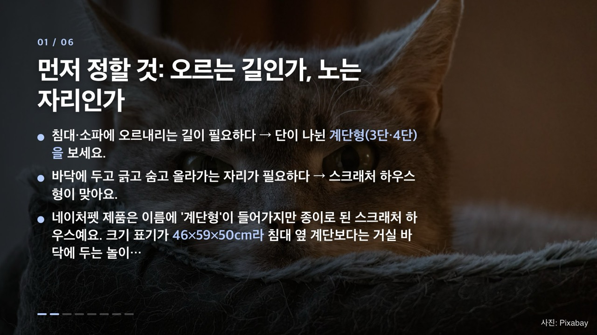

반려
고양이계단, 침대에 오를 길이 필요한지 놀이용 스크래처인지부터
이 게시물은 쿠팡 파트너스 활동의 일환으로, 이에 따른 일정액의 수수료를 제공받습니다.
'고양이계단'으로 검색하면 침대 옆에 두는 계단과, 이름만 계단형인 종이 스크래처 하우스가 섞여 나옵니다. 침대·소파에 오르내릴 길이 필요한 집이 스크래처를 사면 침대 옆엔 못 쓰는 물건이 와요. 무엇을 위한 계단인지 먼저 정하면 9,690원짜리와 27,800원짜리 중 어느 쪽인지 바로 갈립니다.

오르는 길인가요, 노는 자리인가요?
- 예전엔 한 번에 뛰던 침대·소파 앞에서 머뭇거리는 고양이 → 단이 나뉜 계단형. Vic Vik 반려동물 계단 3단(11월 6일 27,800원, 상품평 1,135개)은 상품명에 3단·미끄럼방지·메모리폼이 적혀 있어요.
- 안 쓸 때 접어 치워야 하는 좁은 방 → 딩동펫 4단 접이식 계단(11월 6일 쿠폰 적용가 38,790원, 쿠폰 전 42,900원).
- 바닥에서 긁고 숨고 올라가는 자리가 필요한 집 → 네이처펫 계단형 스텝 스크래처 하우스(11월 6일 9,690원, 상품평 1,455개). 종이 재질에 46×59×50cm라 침대 옆 계단보다 거실 놀이 자리에 가까워요.
접이식에 얼마를 더 내는 셈인가요?
11월 6일 값으로 고정형 3단(27,800원)과 접이식 4단(38,790원)의 차이는 10,990원이에요. 단 하나와 '접어 치울 수 있음'에 1만 원 남짓을 더 내는 셈이라, 방에 늘 펴 둘 자리가 있다면 고정형으로 충분하고, 청소나 손님 때마다 치워야 하는 집이라면 그 차이를 낼 만해요.
계단 높이는 침대에 맞나요?
꼭대기 단이 침대 윗면보다 한참 낮으면 결국 마지막에 다시 뛰어야 해요. 그래서 줄자로 바닥에서 침대(또는 소파 방석) 윗면까지 먼저 잽니다.
- Vic Vik 3단: 판매 페이지 표기가 40*55*35예요. 단위와 어느 숫자가 높이인지 적혀 있지 않아요. 35가 높이(cm)라면 35cm 안팎의 소파에는 맞고, 그보다 높은 침대에는 마지막 한 번을 더 뛰어야 하는 높이예요.
- 딩동펫 4단 접이식: 단은 하나 더 많지만 판매 페이지에 크기 표기가 없어요. 높은 침대용으로 고려한다면 높이를 판매자에게 먼저 받아 두세요.

몇 kg까지 버티나요?
세 제품 모두 판매 페이지 필수 표기에서 내하중(몇 kg까지 버티는지)을 찾지 못했어요. 체격이 큰 고양이거나 두 마리가 함께 쓸 집이라면, 상품 문의에 체중을 적어 답을 받은 뒤 고르는 게 안전합니다.
마루에서 밀리지 않을까요?
올라탈 때 계단이 앞으로 밀리면 고양이가 오히려 겁을 먹어요. Vic Vik은 상품명에 '미끄럼방지'와 '메모리폼'이 들어 있어요. 접이식은 펴 둔 상태가 단단히 고정되는지, 밑면이 어떤 재질인지 판매 페이지에서 보이지 않았으니, 미끄러운 마루라면 이 부분도 같이 물어 두세요.
이런 집이면 다시 생각하세요
- 침대 옆에 둘 '오르는 길'이 필요한데 스크래처 하우스를 보고 있다 → 용도가 달라요.
- 방이 좁아 안 쓸 때 치워야 한다 → 고정형 메모리폼보다 접이식.
- 체중이 많이 나가는 고양이 → 무게 표기를 받기 전에는 보류.
확인하지 못한 것: 세 제품의 내하중, Vic Vik 크기의 단위·높이 축, 딩동펫의 크기·재질. 직접 써 본 글은 아니고, 가격·상품평 수는 11월 6일 쿠팡 표시값이라 지금은 다를 수 있어요.
출처
- 가격·크기·재질·단 수: 11월 6일 쿠팡 판매 페이지 필수 표기